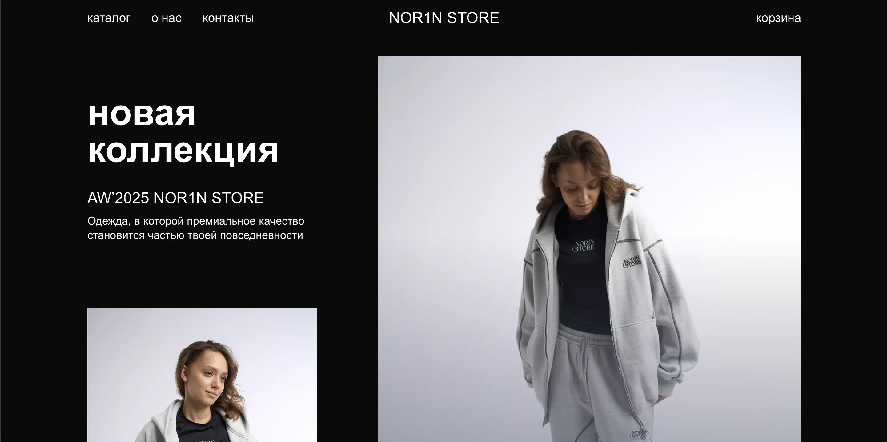
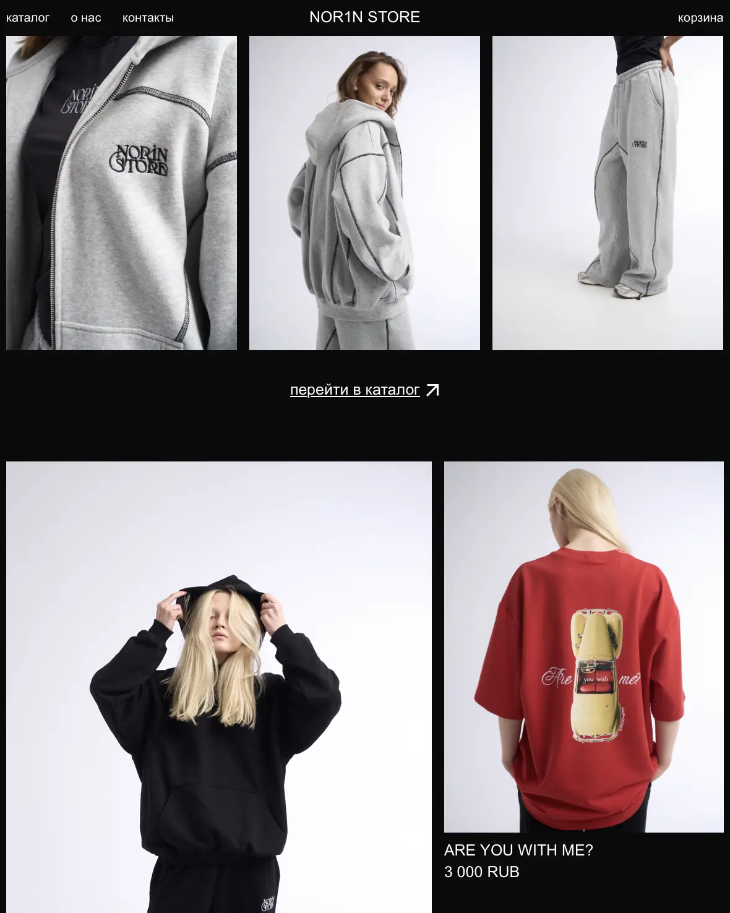
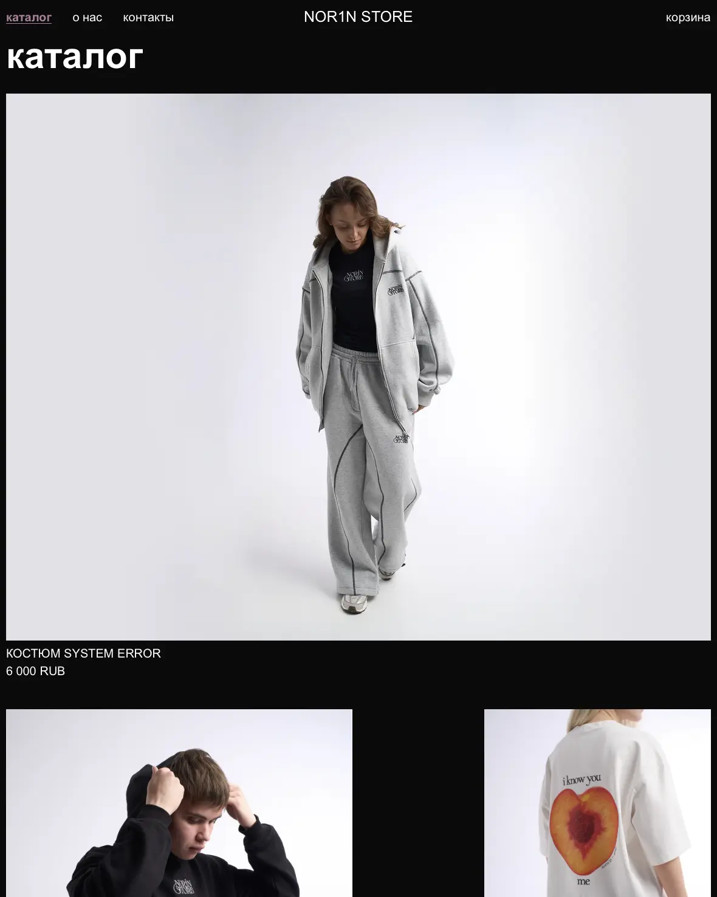
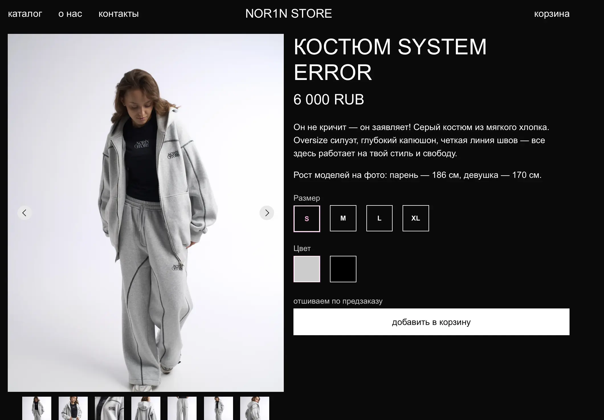
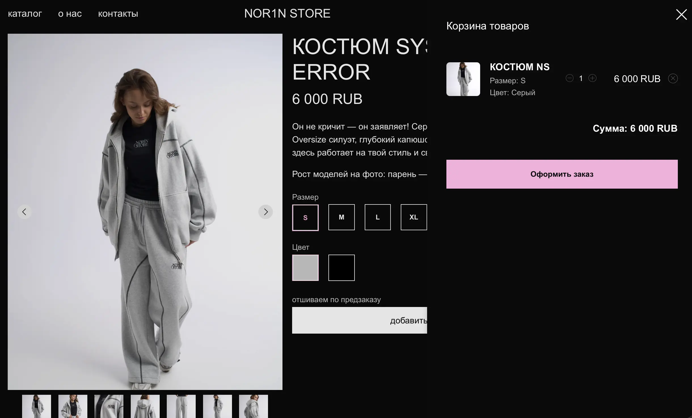
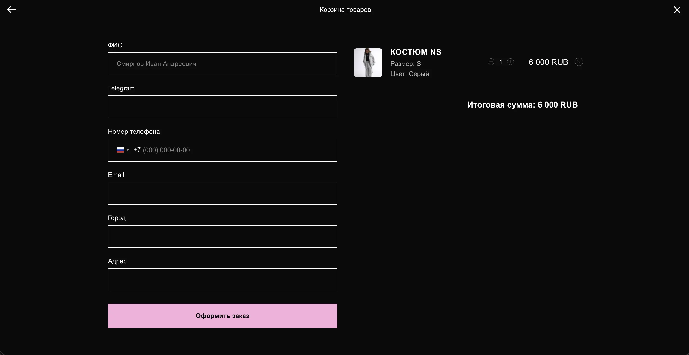

Интернет‑магазин уральского бренда одежды NOR1N STORE: главная страница, каталог и карточки товаров с понятной структурой и быстрым выходом к покупке. Цель — передать характер бренда и упростить путь пользователя от первого захода на сайт до оформления заказа в пару шагов
Бренд позиционируется как локальный производитель одежды «с уральским подходом»: внимательный к деталям, материалам и удобной посадке вещей. Я спроектировал сайт, который отражает это позиционирование в текстах и интерфейсе и не перегружает пользователя лишними элементами.

На главной странице собраны ключевые блоки: лаконичный слоган бренда, подборка популярных позиций и заметный переход в каталог, чтобы сразу показать ассортимент. Каталог построен вокруг базовых категорий (худи, футболки, штаны, костюмы) и коротких описаний «современные вещи с уральским характером», которые задают тон всему сайту.



Карточки товаров подробно рассказывают о составе, уходе и особенностях посадки вещей, чтобы снизить количество вопросов перед покупкой. В описаниях используются простые формулировки и акценты на материалах и удобстве, а фотографии и съёмка поддерживают честный, приземлённый образ бренда.


Я проработал структуру сайта, навигацию, тексты, визуальный стиль и логику переходов от главной к оформлению заказа и контактам. Сайт помогает бренду выглядеть современно и быть самостоятельным игроком: чётко формулирует ценности и даёт удобный онлайн‑формат для покупки одежды.